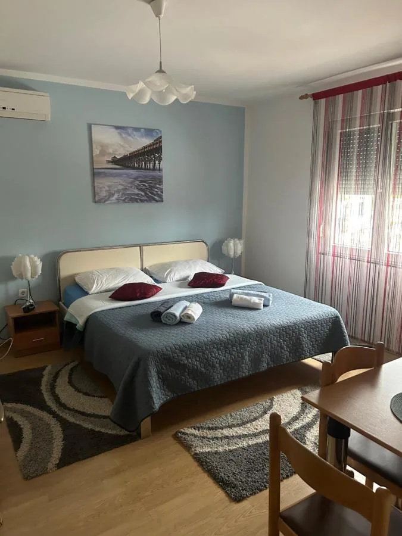
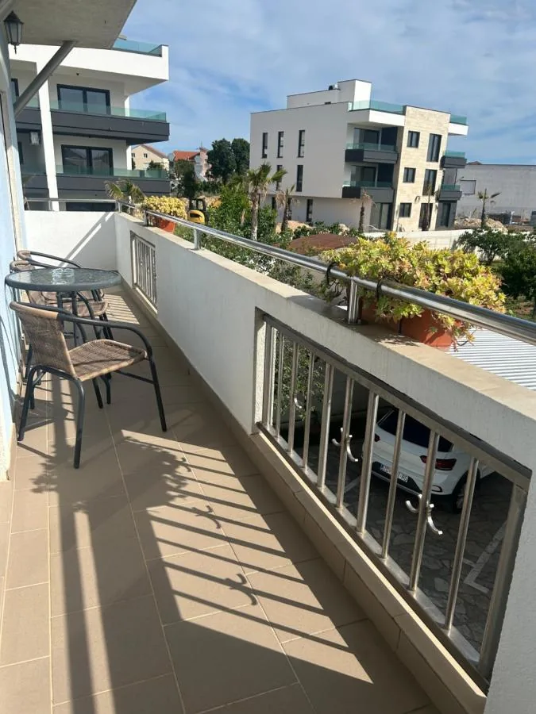
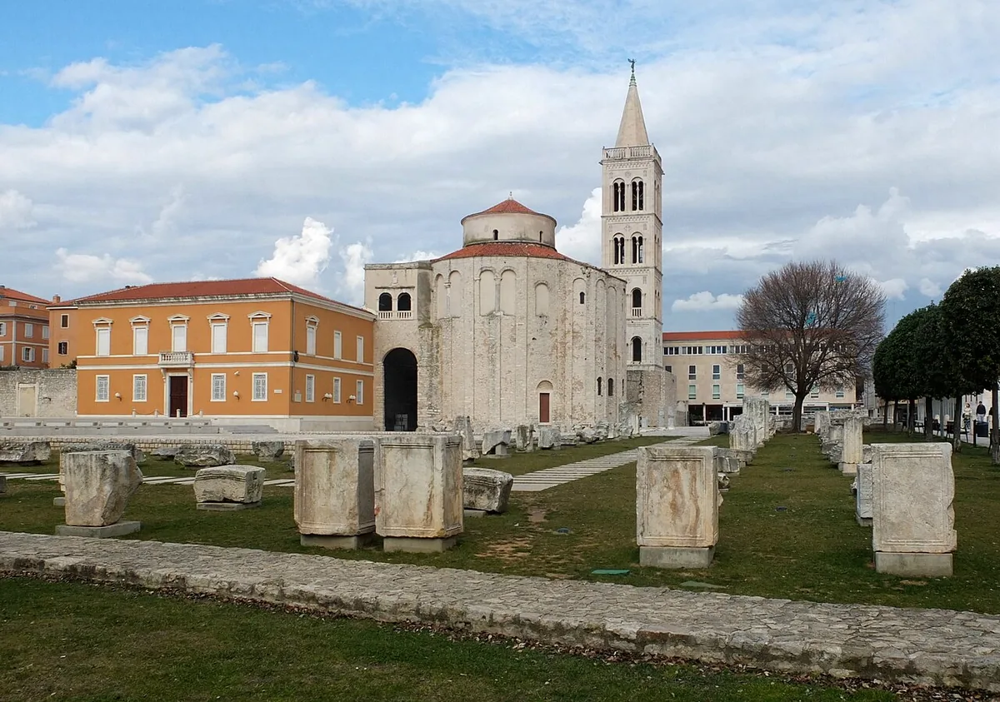
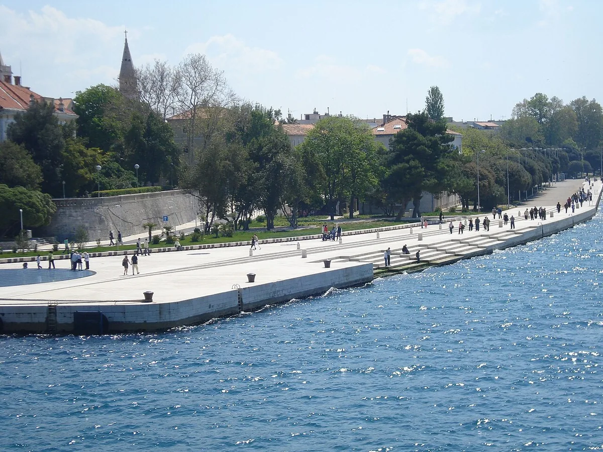
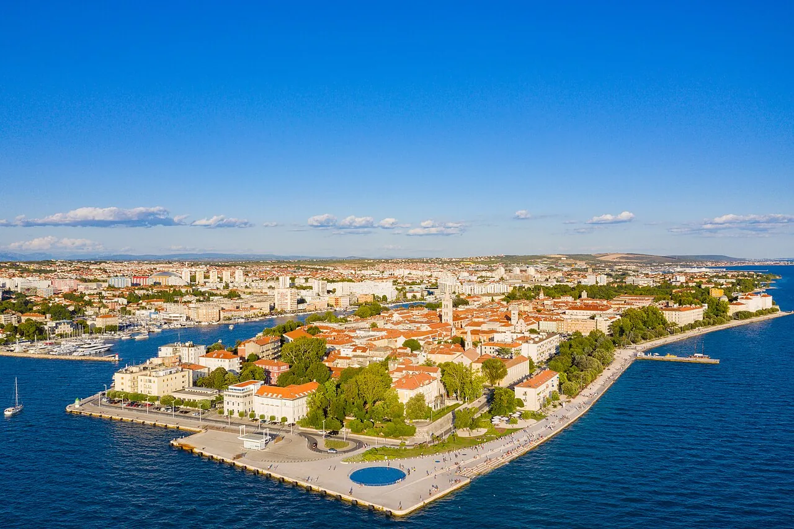
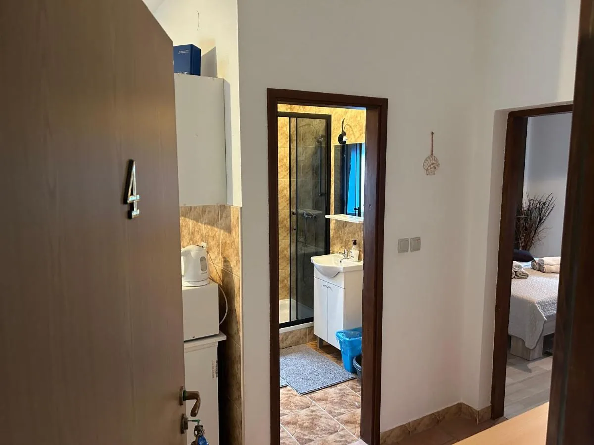
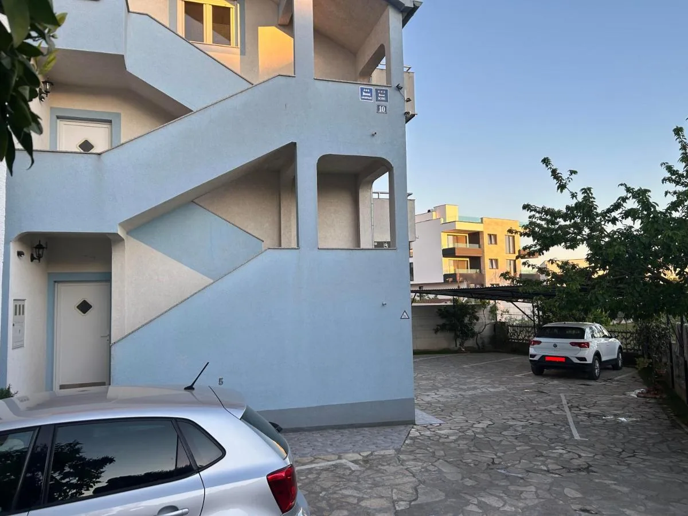
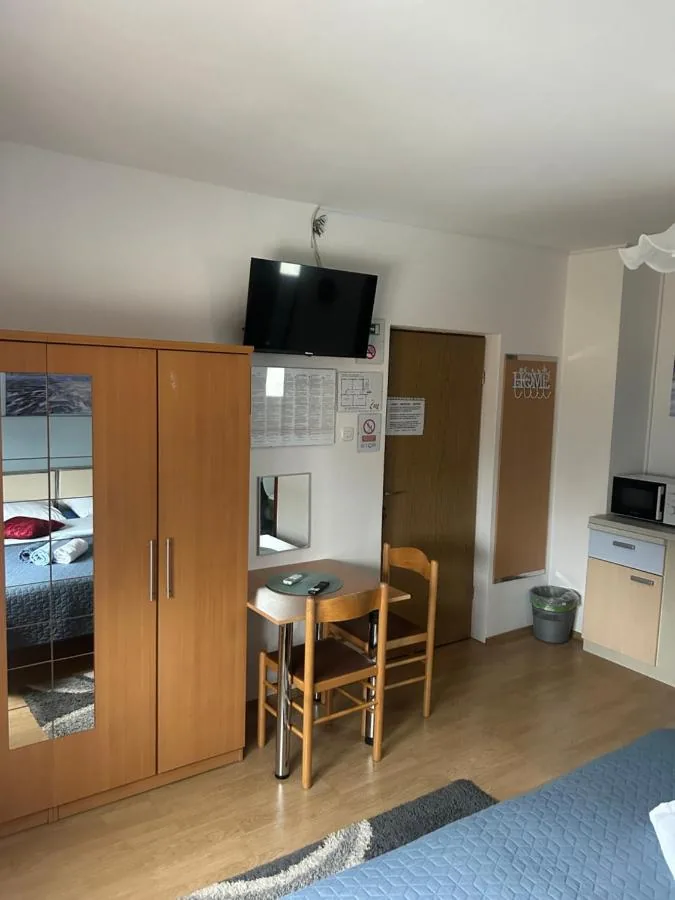
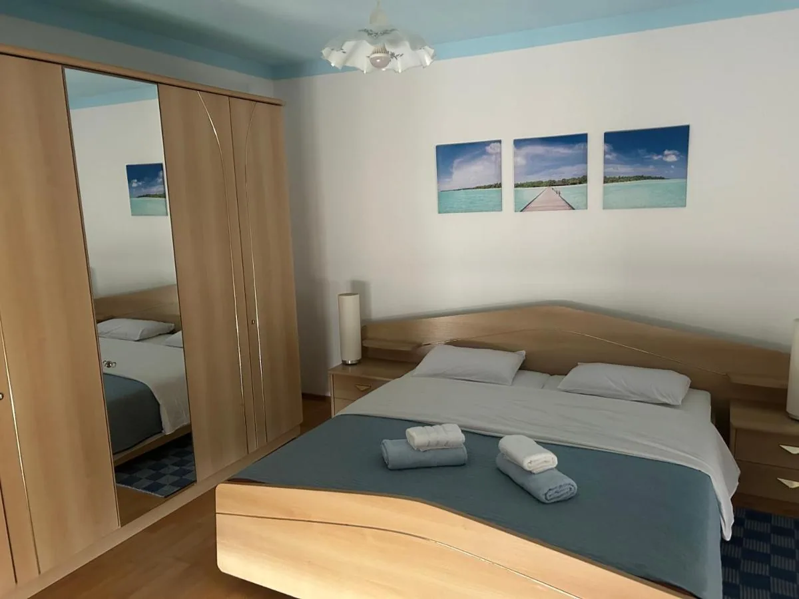
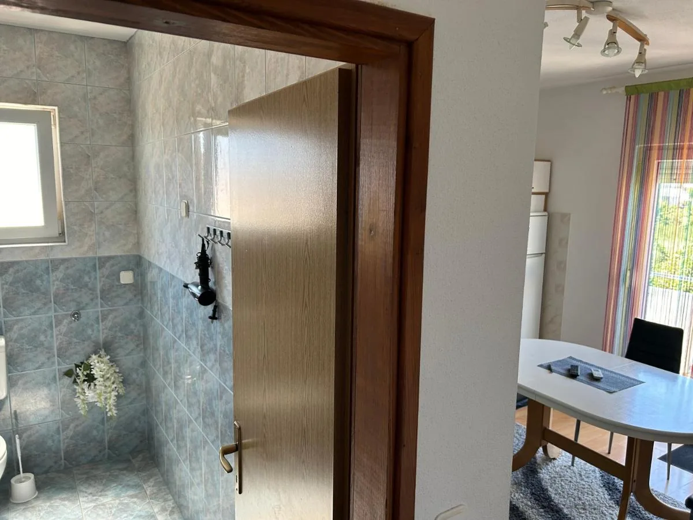

Soba
Dvokrevetna soba
Soba s klimom, privatnom kupaonicom i tušem, TV‑om sa satelitskim programima, hladnjakom, mikrovalnom i kuhalom za vodu.
KlimaPrivatna kupaonicaHladnjakWi‑Fi
Cijena na upitUpit
Pet smještajnih jedinica u mirnom stambenom naselju Crvene kuće. Klima, privatna kupaonica i besplatan privatni parking uz kuću.
Guest House Ana nalazi se u Ulici Nikole Šopa 10, u stambenom naselju Crvene kuće. Sobe imaju klimu, privatnu kupaonicu, hladnjak, mikrovalnu i kuhalo za vodu, a odabrani apartmani i potpuno opremljenu kuhinju s pećnicom. Gosti na Booking.comu najčešće hvale ljubaznost domaćina, čistoću i prostranost jedinica.

Sve jedinice imaju klimu i grijanje, privatnu kupaonicu s tušem i sušilom za kosu, TV sa satelitskim programima, hladnjak, mikrovalnu, kuhalo za vodu i ormar.
Bez recepcije i bez čekanja: kuća ima vlastiti ulaz, a jedinice su nepušačke uz označeno mjesto za pušenje vani.
Uz kuću je besplatan privatni parking na ograđenoj površini, pa dolazak automobilom ne traži traženje mjesta u ulici.
Ukupno pet smještajnih jedinica. Za točnu jedinicu, dostupnost i cijenu javite se upitom ili provjerite na Booking.comu.

Guest House Ana kategoriziran je kao guest house s tri zvjezdice. U kući je pet smještajnih jedinica, od soba do apartmana s vlastitom kuhinjom.
Gosti Booking.coma ocijenili su smještaj s 9,4 od 10, a u recenzijama se najčešće izdvajaju ljubaznost domaćina, čistoća soba i praktična lokacija s parkingom.
Kuća ima vlastiti ulaz, videonadzor na vanjskom dijelu i pogled na vrt i unutarnje dvorište. Odabrane jedinice imaju balkon sa stolom i stolicama.
Povijesna jezgra Zadra udaljena je oko 2,8 km, desetak minuta vožnje od kuće.

Antički forum i crkva sv. Donata iz 9. stoljeća, u pješačkoj jezgri na poluotoku. Oko 2,8 km od kuće.

Orgulje ugrađene u kamene stube rive koje svira more. Na zapadnom vrhu poluotoka, uz Pozdrav Suncu.

Solarna instalacija u rivi uz Morske orgulje. Najbliža plaža kući je Podbrig, oko 2,3 km.
Popis je sastavljen prema podacima s Booking.com listinga.





Guest House Ana nalazi se u Ulici Nikole Šopa 10, u stambenom naselju Crvene kuće u Zadru. Do povijesne jezgre na poluotoku, gdje su Rimski forum, crkva sv. Donata, Morske orgulje i Pozdrav Suncu, ima oko 2,8 km, što je desetak minuta vožnje. More je udaljeno oko 1,4 km, a najbliže plaže su Podbrig (2,3 km), Karma (2,6 km) i Bajlo (2,9 km). Zračna luka Zadar udaljena je 11 km.
Uz kuću je besplatan privatni parking na ograđenoj površini, pa je dolazak automobilom najjednostavniji. Za točne upute za dolazak javite se upitom.